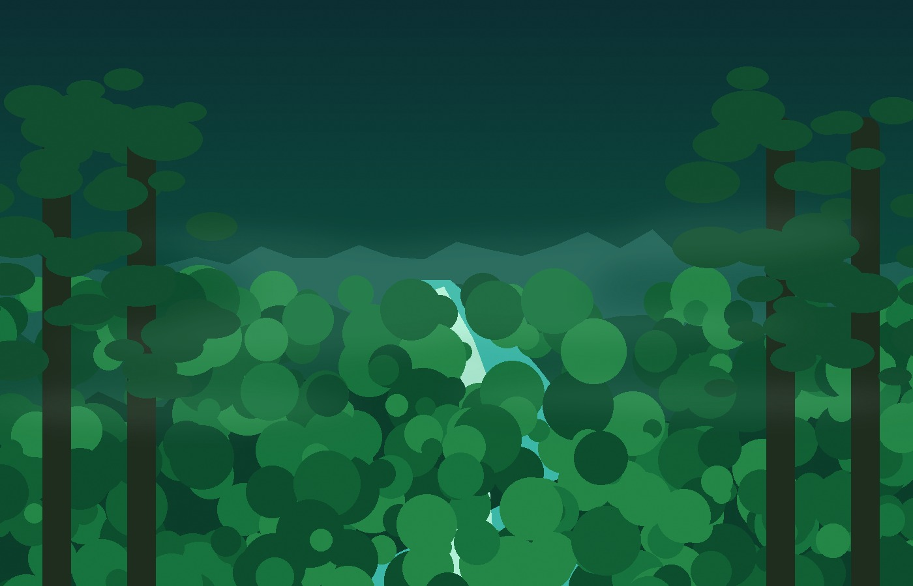

MAMMAL
Jaguar
Panthera onca
EXPLORER LENS
THE PLANET IS YOUR FIELD GUIDE
Spin the globe, land anywhere, and meet the habitats and animals that make that place alive.

CURATED JOURNEYAmazonas, Brazil
A layered world where rivers flood into forests and thousands of species share the same vertical city of leaves.
Saved only in this browser. No account required.
Panthera onca